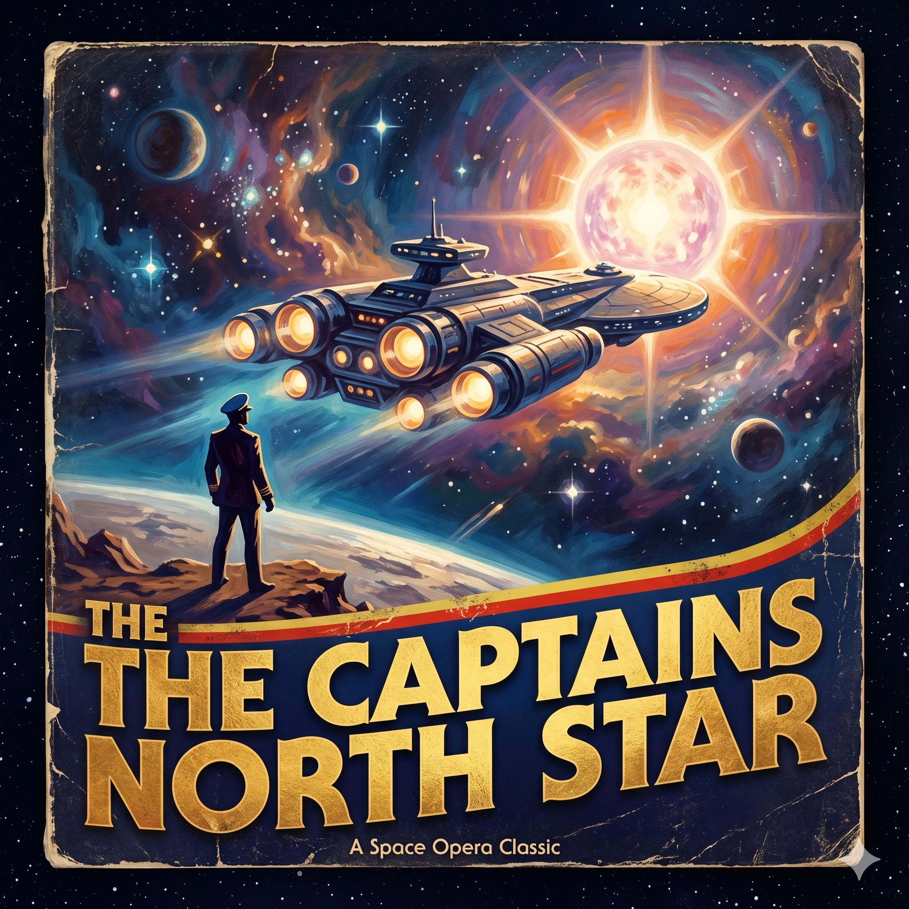

> CLICK TO INITIALIZE SYSTEM COMMAND
> TUNING TO CELESTIAL FREQUENCY 88...
> TRACING A JOURNEY ACROSS THE STARS...
> HAPPY 88 MICHAEL...
爸爸节
Engage

Michael
父親節快樂
Like the sacred geometry of the cosmos, your journey across space and time, built a beautiful universe for our family.
Thank you for being our hero, our steady gravity, and our guiding star. May you continue to
live long and prosper.
STAR DATE 8.8 // BA BA JIE